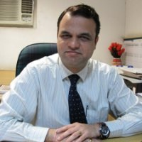
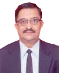
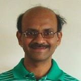
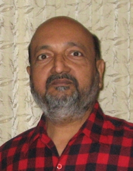
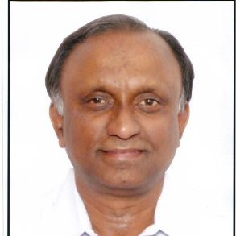
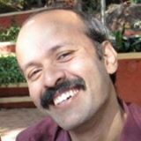
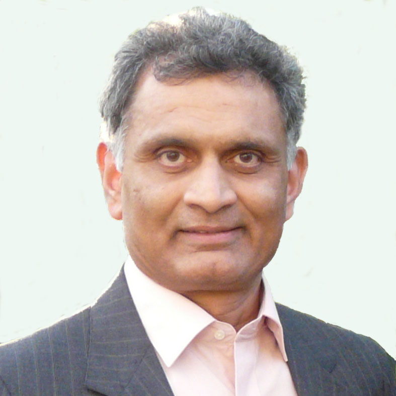
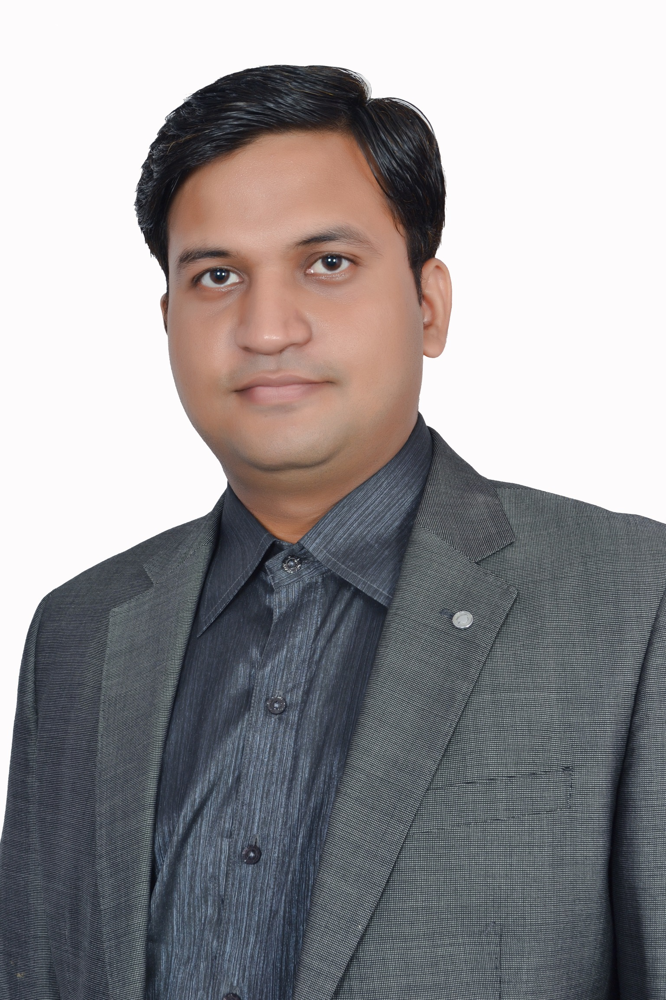
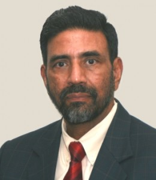
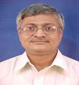

Core Weekend is a series of 10 department wise sessions-where the students get to interact with successful seniors who have taken up Core-Engineering jobs and have excelled in their fields.This will be great chance for students to learn more about the opportunities that lie in Core-Engineering fields.
It is primarily aimed at benefiting the final year students who are about to sit for placements,
to arrive at a well-informed career decision.The sessions can be arranged both in person as well as through video conferencing.
Profile of confirmed speakers:

Mr. Rajesh Gajjar has 21 years of experience in core civil engineering and currently running his own consultancy firm GMD Engineering Consultants Pvt. Ltd.He has been General Manager at Eigen Technical Service Private Ltd(A part of Laing 'O' Rourke UK)2005,January 2011 (6 year).He is expert in Highways ,Bridges,Traffic and Transportation,Wet Infrastructure,Feasibility Studies,Construction Management and Allied Services
He is presently working as General Manager (Technical Services & Quality) at ITD Cementation India limited.He has done his PhD in Pile foundations from IIT Bombay in 2004 and has field experience of 10 years and Teaching and Research experience of 16 years.He has 42 papers published in Journals and Conference proceedings till date.He is a Life Member of Indian Geotechnical Society and member of Deep Foundation Institute (USA) and Member, Indian Society of Technical Education.

Graduate from IIT Bombay,Energy system and Engineering Mtech 1984-1986 batch Presently working as Senior fellow in TERI (The Energy and resources institute) steering the renewable energy technology group.A non-profit organization founded in 1974 creating innovative solutions for sustainable future Worked as Vice president for Green Energy Renewables pvt Ltd which aims at setting up solar and wind power plants across India and also South Africa, Morocco, Indonesia,Poland. Also worked as General Manager for over a decade in Renewables Energy Pvt ltd. where he commercialised solar selective coating technology, developed solar selective coating plant for Solar water heater.

Presently working as a principal development manager at Bing, Microsoft in hyderabad. He has been responsible for delivering numerous search quality improvements in bing for the past 6 years and had 4 patents filed. He has also worked as an architect and lead developer at Reconnex from september 2006 to march 2008. Before that he was principal software engineer at Symantec Corporation for 6 years.

IIT Bombay graduate, B.tech in mechanical engineering(1970 Batch) He is currently the Director of Neubauplan Machine Design Auto. He has been working with this company for past 32 years. He is also the managing director of Neubauplan Automation Machines Private Limited. He worked as a design executive at electronica Machine Tools Limited from August 1978 to June 1981. Before that he worked as a design engineer at Godrej for 2 years. Honor and Awards: Special Jury's amention Manus Competition, Germany (April, 2013): For a ground-breaking use of engineering plastic sliding bearing in a very high-impact application.

Graduate from IIT Bombay,Bachelor of Technology (B.Tech.), Metallurgical Engineering 1972-1977 Presently the Owner of TECHNIK founded in 1992. Organizational work includes Advice, Education & Training in Welding Technology Worked as Technical Manager in Advani Oerlikon Ltd. Mumbai India where he was responsible for Marketing & Technical Support for Continuous Welding Processes, Systems and Consumables Worked as Working Engineer in Larsen & Toubro Ltd. Mumbai

Owner of Peacock Design is a Master of Design from Industrial Design Centre (IDC) IIT Bombay 1988-90 Batch. Peacock Design Lab creates innovative products using latest CAD and rapid manufacturing technologies.Gokul has over 23 years of experience in the field of industrial design. He has worked for A Little World, Intergold India Pvt Ltd, Crompton Greaves and Godrej & Boyce Mfg. Ltd. over this time.

After receiving B.Tech. in 1979 and M.S, in 1981 (Chemical engineering) Hemant joined DuPont. His 30 years of career with DuPont spanned three continents - America, Europe and Asia. He worked in different areas such as Operations, Process Control Modelling, Simulation, IT and Project engineering. For the last 10 years, Hemant has been working in Six Sigma, Lean and supply chain. Hemant retired early from DuPont to devote his time for an NGO in India. He lives and works at this NGO - Muni Seva Ashram - which is located in a small village near Vadodara. At this NGO, he is leading an effort to build a 1.3 MW industrial size plant that will derive biogas from agricultural, industrial and animal residue and make the NGO 100% independent from geo energy.

Graduated from Aerospace Department, IIT Bombay in 2009. Vaibhav Vasistha is working as an Application Engineer in ANSYS. His main domain is Computational Fluid Dynamics and is an expert in turbomachinery.

Dr. Jain earned his Bachelor's Degree in Electrical Engineering from IIT Bombay, a Master's Degree in Electrical Engineering from IIT Delhi. He started with Harris Communications in Dallas, TX, designing the Operating System for the Communication Processor. He has spent 25 years with Tata Group Companies - Tata Consultancy Services (TCS) and Tata Infotech Ltd. (Now merged with TCS). He has also worked as an Advisor with Patni Computers to assist the company in improving their 'Operation Efficiency' and in improving their infrastructure. Earlier Dr. Jain was the CEO of ISG Novasoft, based in India and the U.S. For the last 10 years, Dr Jain had been working as CEO & Advisor to different Information Technology Services companies.

Swapan Kumar Ghosh earned his BSc and MSc degrees from the University of Burdwan, after which he taught in Balurghat College and then joined Bhabha Atomic Research Centre (BARC), Bombay, first as a Trainee and then as Scientific Officer. He did his PhD (1982) from Indian Institute of Technology (IIT), Bombay under the supervision of BM Deb. He worked with Robert G Parr at the University of North Carolina, Chapel Hill (1984-85). Ghosh presently heads the Theoretical Chemistry Section at BARC, Mumbai. He is also senior Professor and Dean-Academic (BARC), Chemical Sciences at the Homi Bhabha National Institute, Mumbai, and an adjunct Professor at the University of Mumbai-DAE Centre of Excellence for Basic Sciences, Mumbai.